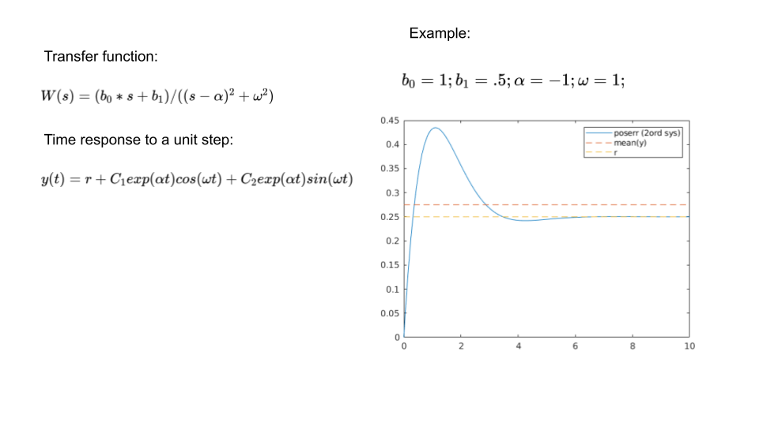

Assume that the position error trend can be approximated by a
second order system with two complex conjugate poles (to model the oscillations)
and a zero (at low frequency to model the overshoot), the mean of the error mean(y)
could move away from the steady value r . So I was thinking, instead of
using the average, that I could fit the y(t) expression to the data in order
to identify the parameters, in particular r (keeping the assumption that
the error can be actually modelled as a second order system).

This seems interesting. I could also search
for 'curve fitting python' in google.